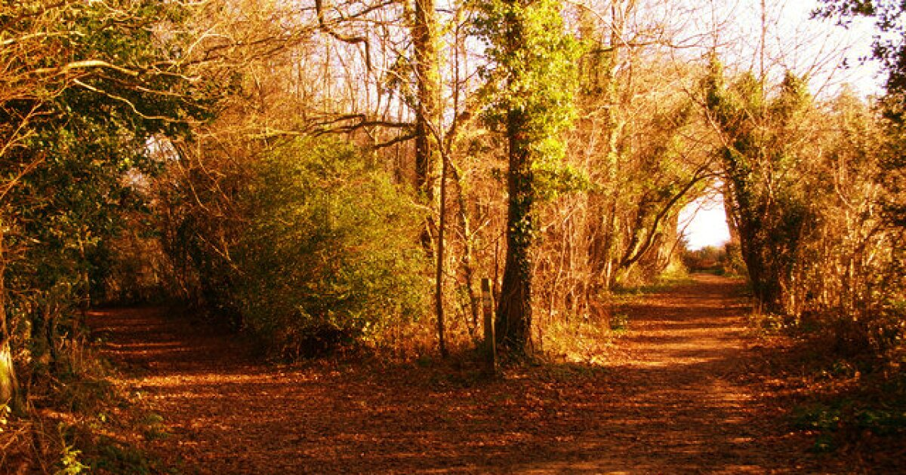

Poems

A RED, RED ROSE
That’s newly sprung in June;
O my Luve is like the melody
That’s sweetly played in tune.
So deep in luve am I;
And I will luve thee still, my dear,
Till a’ the seas gang dry.
And the rocks melt wi’ the sun;
I will love thee still, my dear,
While the sands o’ life shall run.
And fare thee weel awhile!
And I will come again, my luve,
Though it were ten thousand mile.
CROSSING THE BAR
And one clear call for me!
And may there be no moaning of the bar,
When I put out to sea,
Too full for sound and foam,
When that which drew from out the boundless deep
Turns again home.
And after that the dark!
And may there be no sadness of farewell,
When I embark;
The flood may bear me far,
I hope to see my Pilot face to face
When I have crost the bar.

The Road Not Taken
And sorry I could not travel both
And be one traveler, long I stood
And looked down one as far as I could
To where it bent in the undergrowth;
And having perhaps the better claim,
Because it was grassy and wanted wear;
Though as for that the passing there
Had worn them really about the same,
In leaves no step had trodden black.
Oh, I kept the first for another day!
Yet knowing how way leads on to way,
I doubted if I should ever come back.
Somewhere ages and ages hence:
Two roads diverged in a wood, and I—
I took the one less traveled by,
And that has made all the difference.

Do Not Go Gentle into That Good Night
Old age should burn and rave at close of day;
Rage, rage against the dying of the light.
Because their words had forked no lightning they
Do not go gentle into that good night.
Their frail deeds might have danced in a green bay,
Rage, rage against the dying of the light.